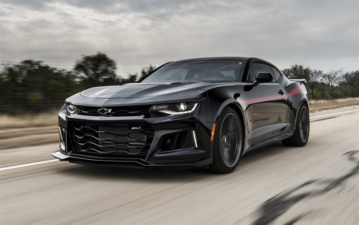

O samochodze
Chevrolet Camaro – samochód sportowy typu pony car
klasy średniej produkowany pod amerykańską marką Chevrolet w latach
1966 – 2002 oraz ponownie od 2009 roku. Od 2015 roku produkowana jest
szósta generacja modelu. Chevrolet Camaro VI został zaprezentowany po
raz pierwszy w 2015 roku. Po 6 latach produkcji, Chevrolet zdecydował
się gruntownie odświeżyć Camaro, prezentując zbudowaną od podstaw jako
nową konstrukcję szóstą generację modelu.
Lifting
Korekcie uległy proporcje - przód stał się bardziej masywny i wyżej
poprowadzony, tył stał się krótszy, za to pas przedni zachował
bardziej agresywny kształt. Samochód stał się też nieznacznie węższy,
krótszy oraz niższy, a także lżejszy dzięki aluminiowej konstrukcji.
Obszerne zmiany przeszła za to kabina pasażerska, która zyskała
awangardowy projekt z charakterystycznymi, nisko umieszczonymi
okrągłymi nawiewami i dużym ekranem dotykowym do sterowania systemem
multimedialnym.
Wersje silnikowe
Dostępne wersje silnikowe w Chevrolecie Camaro to:
-V6 3.6L LLT.
-V6 3.6L LFX.
-V8 5.3L LSX.
-V8 6.2L LS3.
-V8 6.3L L99.
-V8 7.0L LS7.
Wersje wyposażeniowe
Gama samochodów Chevrolet Camaro dostępnych w ofercie od General
Motors to:
-Chevrolet Camaro ZL1.
-Chevrolet Camaro SS.
-Chevrolet Camaro 1LE.
-Chevrolet Camaro RS.
-Chevrolet Camaro ZL1LE.
-Chevrolet Camaro The EXORCIST.

CHEVROLET CAMARO 1st GEN (1966-1969)
CHEVROLET CAMARO 2nd GEN (1970–1981)
CHEVROLET CAMARO 3rd GEN (1981–1992)
CHEVROLET CAMARO 4th GEN (1992–2002)
CHEVROLET CAMARO 5th GEN (2009–2015)

CHEVROLET CAMARO 6th GEN (2015-TERAZ)
Produkcja pierwszego pony cara Chevroleta odbyła się na krótko po premierze modelu, pod koniec września 1966 roku.
Pierwsza generacja Camaro została zbudowana na płycie podłogowej koncernu General Motors o nazwie F-body z wykorzystaniem
elementów mechanicznych osobowego modelu Nova.
Camaro SS zawierało zmodyfikowany silnik V8 o pojemności 5,7 litra (350 KM) oraz jednostkę big-block V8 L35 o pojemności 6,5 litra.
SS cechowały dodatkowe wloty powietrza na masce, specjalne pasy malowane na karoserii i znaczki SS znajdujące się na przednim grillu,
bagażniku, klaksonie oraz wlewie paliwa. Camaro było przygotowane jako samochód bezpieczeństwa do wyścigu Indianapolis 500.
Podczas trwającej 3 lata produkcji pierwszej generacji Chevroleta Camaro, samochód przeszedł dwie restylizacje, z czego największa
przypadła na 1968 rok. W jej ramach zmienił się wygląd pasa przedniego na rzecz pojedynczych reflektorów. Zmieniono też wygląd tylnej
części nadwozia, montując dłuższe lampy.
Opracowując drugą generację Camaro, Chevrolet zdecydował się ponownie zastosować platformę F-body używaną już w poprzedniku. Poza tym elementem,
pony car amerykańskiego producenta zyskał zupełnie nowy projekt nadwozia.
Samochód stał się masywniejszy, zyskując charakterystyczną, płynną sylwetkę z szeroko rozstawionymi reflektorami w tubalnie zakończonych błotnikach
oraz dużym wlotem powietrza w centralnym punkcie pasa przedniego przedzielonym chromowanym zderzakiem. Gwałtownie opadającą tylną część nadwozia
zdobił z kolei spojler oraz podwójne, okrągłe reflektory.
Podczas trwającej 11 lat produkcji Chevroleta Camaro drugiej generacji, samochód przeszedł liczne restylizacje wyglądu zewnętrznego. W ramach pierwszej,
przeprowadzonej w 1971 roku, z pasa przedniego zniknął chromowany zderzak, przez co duży wlot powietrza został wyraźniej zaakcentowany.
Rok później, w roku 1972, Camaro II przeszło znacznie obszerniejsze zmiany w wyglądzie. Pojawił się nowy, bardziej ścięty przód z niższym
i szerszym wlotem powietrza, a także innymi, jednoczęściowymi lampami tylnymi.
Trzecia, gruntownie zrestylizowana generacja Camaro, ponownie powstała w oparciu o platformę F-body koncernu General Motors.
Jednocześnie, samochód przeszedł obszerne zmiany w projekcie nadwozia, a także po raz pierwszy pojawiły się silniki z fabrycznym
wtryskiem paliwa. Modyfikacje w układzie kierowniczym oraz hamulcowym poprawiły jakość prowadzenia, za to zmiany w konstrukcji
ułatwiły obniżenie masy całkowitej.
Karoseria zyskała charakterystyczne, bardziej kanciaste i awangardowe kształty, z charakterystycznymi, kanciastymi, głęboko
osadzonymi reflektorami, a także szpiczasto ukształtowanym pasem. Z tyłu pojawiły się z kolei strzeliste, ostro zakończone
lampy. Po raz pierwszy klapa bagażnika unosiła się razem z szybą, zapewniając lepszy dostęp do przedziału bagażowego.
Po raz pierwszy w modelu Camaro zastosowano silniki czterocylindrowe, które w 1985 roku zostały wycofane z oferty. Pojawiły
się także po raz pierwszy 16-calowe koła (począwszy od roku 1985, jako standard w IROC-Z i opcja w Z-28) oraz trzecie światło
stopu na tylnej szybie, a później za nią (począwszy od roku 1986).
Podczas 11 lat rynkowej obecności trzeciej generacji, Camaro przeszło jedynie drobne modyfikacje obejmujące wystrój wnętrza,
wyposażenie standardowe czy detale zewnętrzne, bez poważniejszych zmian w wyglądzie nadwozia.
Po ponad dekadzie rynkowej obecności poprzednika, czwarta generacja Camaro przyniosła gruntowne odświeżenie formuły, pomimo
zachowania dotychczasowej platformy F-body. Samochód utrzymano w nowej, futurystycznej wówczas stylistyce charakteryzującej
się smukłym, strzelistym i zaokrąglonym nadwoziem, a także charakterystycznymi, ciemnymi kloszami głęboko osadzonych reflektorów.
Przez pierwszy rok samochód dostępny był wyłącznie jako 3-drzwiowe coupe, z kolei w 1993 roku ofertę uzupełniła odmiana kabriolet
produkowana podobnie jak coupe wyłącznie w kanadyjskich zakładach General Motors.
W pierwszej połowie 1997 roku Chevrolet zdecydował się gruntownie zrestylizować Camaro czwartej generacji, czego efektem było
przeprojektowanie pasa przedniego i szereg innych zmian w stylistyce zewnętrznej. Pojawiły się zaokrąglone, niżej osadzone
reflektory, większy wlot powietrza w zderzaku, a także mniej szpiczasty przód. Ponadto zmieniono także wkłady lamp tylnych i wprowadzono
zmiany w wyposażeniu standardowym.
Pod tą postacią Camaro produkowane było przez kolejne 5 lat, po czym 28 sierpnia 2002 roku Chevrolet zdecydował się zakończyć produkcję
modelu w kanadyjskich zakładach bez przedstawienia bezpośredniego następcy. Camaro zniknęło z portfolio Chevroleta na kolejne 7 lat.
Pierwotnie produkcja seryjnego Camaro piątej generacji miała rozpocząć się w 2008 roku z zaplanowanym początkiem sprzedaży na pierwszy
kwartał 2009 roku, jednak ostatecznie plany te opóźniły się. Ostatecznie, oficjalna premiera Chevroleta Camaro w produkcyjnej formie
miała miejsce w lipcu 2008 roku jako nowoczesnego konkurenta Dodge'a Challengera i Ford Mustang opartego na nowej platformie GM Zeta.
Pod kątem stylistycznym pojazd został zaprojektowany tak, aby przypominał pierwowzór z lat 60. Nawiązują do niego m.in. linia boczna oraz
skrzela tylnych paneli, duża maska w kształcie litery V. W lipcu 2009 roku Chevrolet potwierdził, że Camaro piątej generacji będzie
oficjalnie sprzedawane także na rynku europejskim.
W 2011 roku zaprezentowano najmocniejszą wersję Chevroleta Camaro - ZL1. Pojazd wyposażony został w silnik wspomagany kompresorem w układzie
V8 o pojemności 6,2 litra i mocy 580 KM oraz 754 Nm maksymalnego momentu obrotowego. Samochód wyróżnia się m.in. przeprojektowanym przednim
zderzakiem, maską silnika z dodatkowym "garbem", spojlerem tylnej klapy oraz tylnym dyfuzorem z czterema końcówkami układu wydechowego.
W październiku 2011 roku Chevrolet Camaro V w europejskiej specyfikacji przeszedł drobne zmiany stylistyczne z myślą o lokalnym rynku,
w ramach której m.in. tylne klosze lamp zostały ze sobą scalone i utrzymane w całości w technologii LED. Ponadto, zmieniło się też
koło kierownicy identyczne z innymi, osobowymi modelami Chevroleta sprzedawanymi wówczas w Europie.
Pomimo bycia całkowicie nową konstrukcją, pod kątem wyglądu Camaro szóstej generacji stanowiło rozwinięcie projektu poprzednika,
zachowując ewolucyjny zakres zmian. Korekcie uległy proporcje - przód stał się bardziej masywny i wyżej poprowadzony, tył stał
się krótszy, za to pas przedni zachował bardziej agresywny kształt. Samochód stał się też nieznacznie węższy, krótszy oraz niższy,
a także lżejszy dzięki aluminiowej konstrukcji.
Obszerne zmiany przeszła za to kabina pasażerska, która zyskała awangardowy projekt z charakterystycznymi, nisko umieszczonymi
okrągłymi nawiewami i dużym ekranem dotykowym do sterowania systemem multimedialnym.
W kwietniu 2018 roku Chevrolet zaprezentował Camaro szóstej generacji po obszernej restylizacji nadwozia. Tylna część nadwozia zyskała
klosze z wydorębnionymi uwypukleniami w kształcie zaokrąglonych prostokątów, a także inny zderzak. W zależności od wariantu, inny zakres
zmian przyjął z kolei pas przedni.
Standardowo pojawił się większy wlot powietrza obejmujący mniejsze, węższe reflektory wykonane w technologii LED. Topowa odmiana SS
zyskała z kolei znacznie większą atrapę chłodnicy przedzieloną czarną poprzeczką z logo producenta, a także inny wzór reflektorów
Po fali krytyki ze strony użytkowników Camaro i entuzjastów modelu w sprawie kontrowersyjnie stylizowanego przodu w odmianie SS,
Chevrolet zdecydował się w maju 2019 roku przedstawić model po ponownej modernizacji. Zniknęło czarne malowanie poprzeczki na wlocie
powietrza, a znaczek przesunięto wyżej, na atrapę chłodnicy.